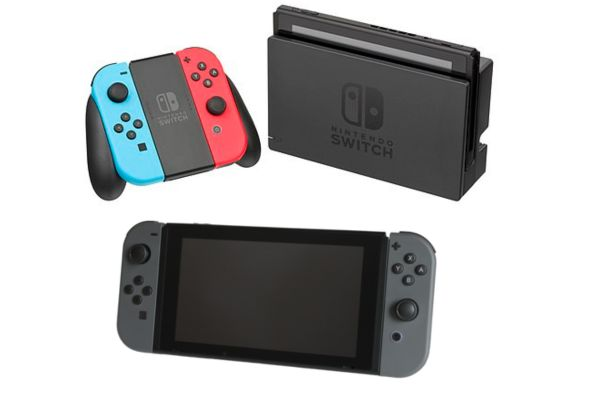
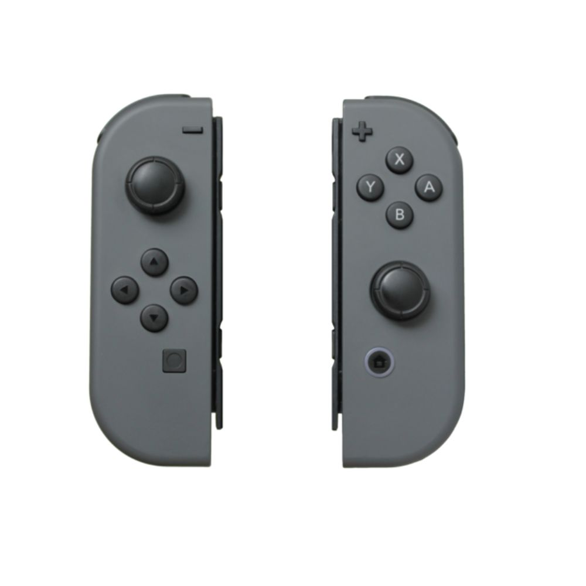
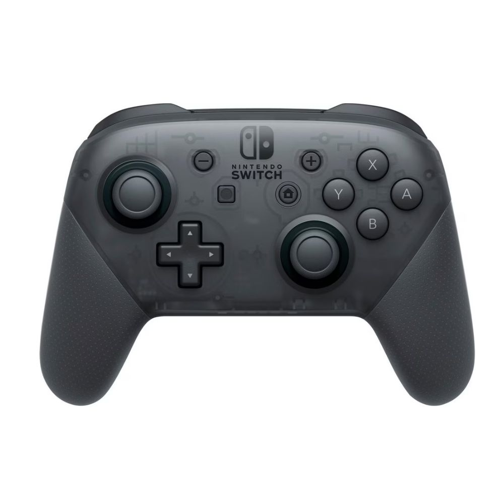
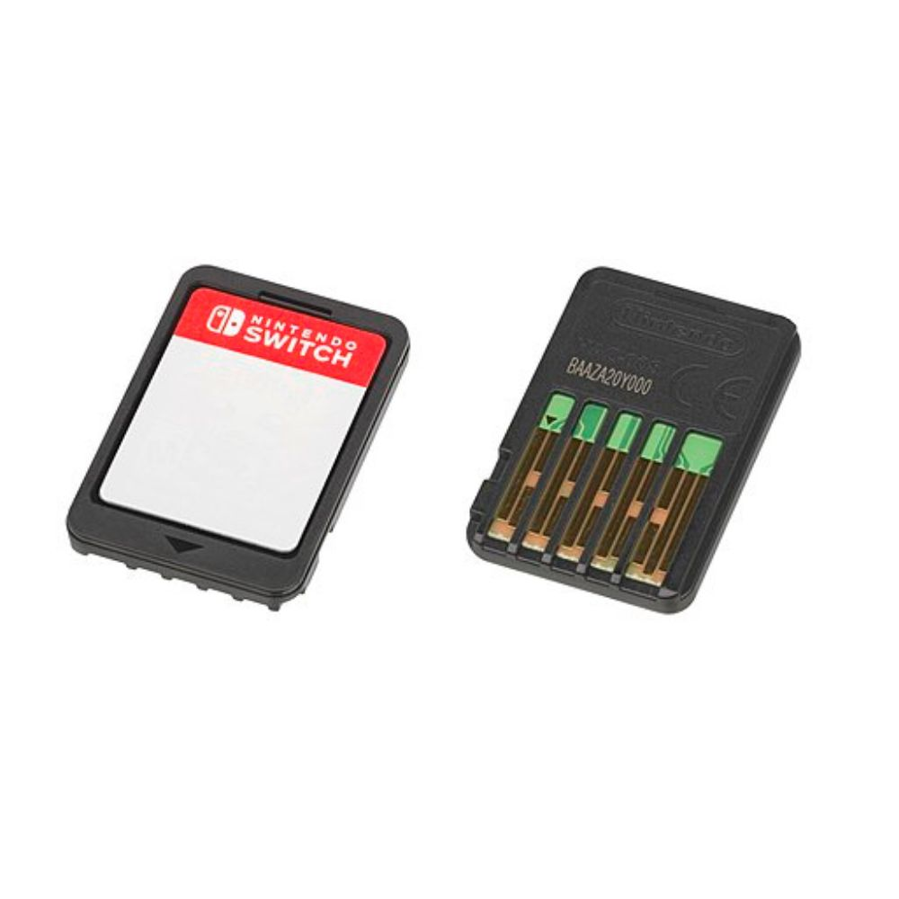

Nintendo Switch

O Nintendo Switch (ニンテンドースイッチ, Nintendō Suitchi) um console de videogame híbrido de oitava geração desenvolvido pela Nintendo. Revelado em 2016 e lançado oficialmente em 3 de março de 2017, o console sucedeu o Wii U e competiu diretamente com o Xbox One, da Microsoft, e o PlayStation 4, da Sony. Com o tempo, também passou a competir com os consoles de nona geração, como o Xbox Series X/S e o PlayStation 5. Na ocasião de seu lançamento, as principais concorrentes parabenizaram a Nintendo publicamente nas redes sociais. No Brasil, o Switch chegou oficialmente em setembro de 2020.
Projetado como um console híbrido, o Switch funciona tanto como portátil (tablet) quanto como console de mesa, com o auxílio de uma base (dock). Ele acompanha dois controles destacáveis, chamados Joy-Con, que podem ser usados individualmente ou acoplados ao console. Os jogos oferecem suporte para multijogador local e online, e estão disponíveis tanto em cartuchos físicos quanto por distribuição digital via Nintendo eShop. O sistema não possui bloqueio de região.
A Nintendo lançou variações do modelo original: o Nintendo Switch Lite, versão exclusivamente portátil, em 20 de setembro de 2019; e o Nintendo Switch OLED, com melhorias na tela OLED e som, em 8 de outubro de 2021. Embora tenha um design portátil, a desenvolvedora sempre reforçou que o Switch é, antes de tudo, um console de mesa, não sendo o sucessor direto do Nintendo 3DS. Com o tempo, o Switch substituiu completamente o Wii U, inclusive recebendo jogos originalmente planejados para ele, como Mario Kart 8 Deluxe e The Legend of Zelda: Breath of the Wild.
O console teve um lançamento extremamente bem-sucedido, com cerca de 3 milhões de unidades vendidas no primeiro mês, superando as expectativas da própria Nintendo. Em um ano, já havia ultrapassado as vendas totais do Wii U, com mais de 14 milhões de unidades comercializadas. Em 2018, tornou-se o console doméstico ou híbrido de venda mais rápida no Japão e nos Estados Unidos. Até setembro de 2025, somando todas as versões, o Nintendo Switch já havia vendido cerca de 154 milhões de unidades globalmente, tornando-se o console doméstico mais vendido da história da Nintendo e o terceiro console de jogos mais vendido de todos os tempos, atrás apenas do PlayStation 2 e do Nintendo DS.
Grande parte do sucesso do Switch está atrelada à sua biblioteca de títulos exclusivos, entre os quais se destacam The Legend of Zelda: Breath of the Wild, Tears of the Kingdom, Mario Kart 8 Deluxe, Super Mario Odyssey, Super Mario Party, Super Smash Bros. Ultimate, Animal Crossing: New Horizons, Pokémon Sword e Shield e Pokémon Scarlet e Violet — todos com mais de 20 milhões de unidades vendidas cada.
História
O Nintendo Switch, anteriormente conhecido pelo codinome Nintendo NX, foi citado pela primeira vez em uma conferência com a provedora japonesa de jogos para smartphones DeNA em 17 de março de 2015. Durante a coletiva da aliança empresarial envolvendo as duas companhias, o falecido presidente e CEO da Nintendo Satoru Iwata anunciou que
"uma plataforma dedicada a jogos com um novo conceito está sendo criada sob o codinome de desenvolvimento 'NX'".A nova plataforma está integrada com o futuro serviço de fidelidade fornecido pela Nintendo em parceria com a DeNA, juntamente com outras plataformas de jogos, incluindo o Nintendo 3DS, Wii U, dispositivos móveis e PCs. Iwata, ainda na conferência, afirmou esperar
trazer mais novidades para a nova plataforma 'NX' até 2016".
Em 2003, engenheiros e designers de jogos foram reunidos para desenvolver ainda mais o conceito. Em 2005, a interface do controle tinha ganhado forma, mas uma exibição pública naquele ano foi cancelada. Miyamoto afirmou que a empresa tinha alguns problemas para resolver. Então decidimos não revelar o controle e, em vez disso, exibimos apenas o console
. O presidente da Nintendo, Satoru Iwata, revelou mais tarde e demonstrou o Wii Remote na Tokyo Game Show de setembro daquele ano.
Em abril de 2016 em um encontro com investidores, a Nintendo anunciou que o NX não estaria na E3 2016 e que o novo Zelda, anteriormente exclusivo para o Wii U, também seria lançado para o console. O atual presidente da Nintendo diz que prefere lançar o console em Março de 2017 para que assim haja mais tempo para as produtoras terminarem seus jogos e não cometer os mesmos erros cometidos no Wii U.
Controles

O Nintendo Switch vem com dois controladores chamados Joy-Con, mais especificamente Joy-Con L e Joy-Con R. O Joy-Con pode ser usado de quatro maneiras diferentes:
- Por um jogador, com os dois acoplados ao console
- Por um jogador, removido e utilizado separadamente em cada mão (semelhante ao Wii Remote e ao Nunchuk)
- Por um jogador, acoplado ao Joy-Con Grip para ser usado semelhante a um gamepad
- Por dois jogadores, removido e usado individualmente

O Pro Controller do Nintendo Switch é um controle sem fio projetado para oferecer mais conforto e precisão durante as partidas. Com ergonomia semelhante à de controles tradicionais, ele possui bateria de longa duração, sensores de movimento, vibração HD e suporte completo a amiibo, sendo ideal para quem busca uma experiência mais imersiva e profissional nos jogos do Switch.
Jogos

Os jogos de Nintendo Switch podem ser obtidos em edições físicas, através de loja de varejo ou digitalmente através da Nintendo eShop. Os jogos distribuídos por lojas são armazenados em cartuchos proprietários, com o design similar aos cartuchos utilizados no Nintendo 3DS porém menores e mais finos. Devido ao seu pequeno tamanho, a Nintendo reveste cada cartucho com benzoato de denatônio, uma substância amarga não-tóxica que evita de crianças venham a ingeri-los. A Nintendo ofereceu um preço sugerido para os jogos de Switch de R$300 (U$60), algo equivalente ao preço dos jogos dos outros consoles. A Nintendo permite que os desenvolvedores emitam o preço que quiser, exigindo apenas que o preço listado seja o mesmo para lançamentos físicos e digitais, caso a desenvolvedora planeje isso. Isso fez com que alguns jogos e relançamentos de terceiros fossem mais caros no Nintendo Switch devido aos custos de fabricação do cartucho usado no sistema. Alguns veículos de comunicação internacionais definiram esses aumentos de preços como "imposto do Switch". O "imposto do Switch" também se aplica a títulos que haviam sido lançados anteriormente em outras plataformas e que posteriomente foram portadas para o Switch, no qual o preço do jogo reflete ao preço original do jogo quando foi lançado pela primeira vez, em vez de seu preço atual. Estima-se que o custo dos jogos do Nintendo Switch seja em média 10% mais caros que os outros formatos.
Os cartuchos do Nintendo Switch possuem até 32GB de armazenamento. A Nintendo planejou introduzir cartuchos de jogos de 64 GB no segundo semestre de 2018, mas a ideia não se concretizou. Alguns jogos físicos ainda podem exigir que o conteúdo seja instalado no armazenamento interno do sistema, com alguns jogos usando uma parte significativa da memória interna caso um cartão microSD não estiver disponível. Outros jogos físicos que tenham uma grande quantidade de conteúdo podem exigir que um cartão microSD esteja presente no Switch, como NBA 2K18; esses jogos são possuem indicativos na capa para mostrar esses requisitos
O Switch suporta a capacidade de jogos em nuvem para executar jogos que requerem mais recursos de hardware do que o Switch permite. Os jogos são executados em uma rede e os cálculos do jogo são realizados no hardware de um servidor. Esses jogos podem estar vinculados a regiões específicas devido às opções de compra. Exemplos iniciais de tais jogos no Switch incluem Resident Evil 7: Biohazard, Phantasy Star Online 2 e Assassin's Creed Odyssey, que foram limitados aos lançamentos japoneses, mais recentemente Control e Hitman 3 foram lançados em todo o mundo em 2020 e em anos posteriores.
O Switch não usa discos ópticos e não possui retrocompatibilidade com o Wii U ou o Nintendo 3DS.
Durante a apresentação inicial, a Nintendo anunciou alguns dos parceiros que se comprometeram a apoiar o novo console; a empresa listou as 48 editoras e estúdios Third-Party. Entre esses parceiros, a Nintendo listou grandes editoras como a Activision, Bandai Namco, Capcom, Electronic Arts, Konami, Sega, Square Enix, Take Two Interactive, Ubisoft e Warner Bros. Interactive Entertainment, bem como 505 Games, Arc System Works, Atlus, Bethesda Softworks, Codemasters, FromSoftware, Frozenbyte, Koei Tecmo, Level-5, PlatinumGames, Spike Chunsoft, Telltale Games e THQ Nordic, entre outros. Ambos Unity Technologies e Epic Games também prometeram apoio para ajudar os desenvolvedores a trazer jogos usando seus respectivos motores de jogo Unity e Unreal Engine 4 para o Switch. The Legend of Zelda: Breath of the Wild, originalmente anunciado como um exclusivo do Wii U, também foi lançado para o Switch. Durante a apresentação do console, foram exibidas cenas de potenciais novos títulos de Super Mario (Super Mario Odyssey), Mario Kart (Mario Kart 8 Deluxe, a versão aprimorada do Mario Kart 8), e Splatoon (Splatoon 2).
Antes da apresentação inicial do console, a Sega e a Ubisoft já tinham confirmado títulos em desenvolvimento para o Switch, incluindo Just Dance 2017 e Project Sonic 2017 (Sonic Forces). O trailer revela também imagens de um porte de NBA 2K17. Enquanto as filmagens de The Elder Scrolls V: Skyrim foram mostradas no trailer, a Bethesda, desenvolvedora do jogo, afirmou que ainda não tinha planejado levar o jogo para a Switch, mas deu o seu apoio ao novo sistema da Nintendo. Apesar disso, a versão de Skyrim para o Nintendo Switch foi posteriormente anunciada na apresentação de 13 de Janeiro de 2017 e mostrada nas conferências da Bethesda e da Nintendo, na E3 de 2017, com conteúdo exclusivo.
Embora o Switch esteja em queda de venda de ano em ano, foram vendidas no mundo 141 milhões de unidades, sendo assim o terceiro console mais vendido da história, atrás do Nintendo DS (154 milhões) e do PlayStation 2 (155 milhões). Devido esta desaceleração nas vendas, um dos principais focos da empresa é apostar em versões comemorativas, como a do jogo The Legend of Zelda: Tears of the Kingdom, como um dos ultimos lançamentos dos grandes jogos.
MinecraftGameplay- demonstração do jogo.
Especificações
| CPU | GPU | ||
|---|---|---|---|
| Fabricante: | Nvidia / Nintendo | Chipset: | Nvidia Tegra X1 (SoC personalizado) |
| Arquitetura: | ARM Cortex-A57 (quad-core) + Cortex-A53 (quad-core) | Arquitetura gráfica: | Maxwell (GPU integrada) |
| Clock: | 1.02 GHz (modo dock e portátil) | Clock: | 768 MHz (dock) / 307–460 MHz (portátil) |
| Barramento: | 64 bits | Memória de vídeo: | Compartilhada (4 GB LPDDR4) |
| Resolução: | 720p (modo portátil) / 1080p (modo TV) | ||
| Áudio | Mídia | ||
| Chip: | Integrado ao SoC Tegra X1 | Tipo: | Cartucho proprietário (Game Card) |
| Canais: | Som estéreo (até 7.1 digital via HDMI) | Capacidade: | Até 32 GB por cartucho |
| Frequência de amostragem: | 48 kHz | Armazenamento interno: | 32 GB eMMC (expansível via microSD até 2 TB) |
| Tela | Conectividade | ||
| Tipo: | LCD capacitiva de 6,2 pol | Sem fio: | Wi-Fi 802.11 a/b/g/n/ac, Bluetooth 4.1 |
| Resolução: | 1280×720 px | Portas: | USB-C, slot microSD, saída HDMI (via dock) |